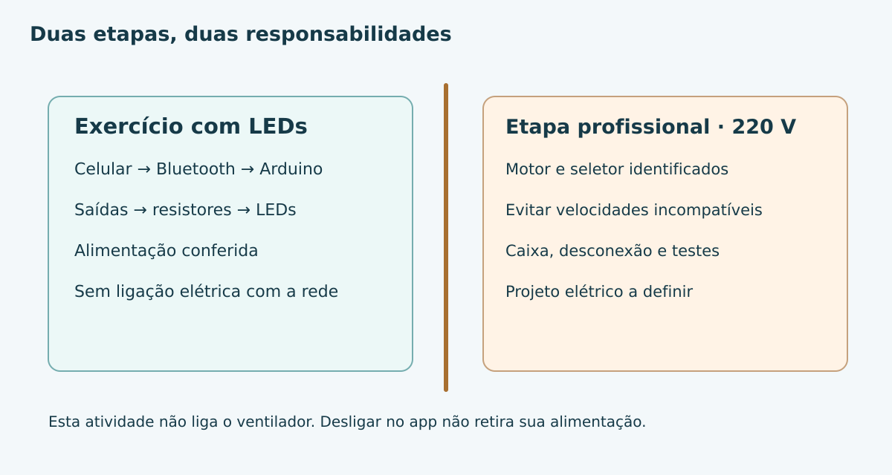
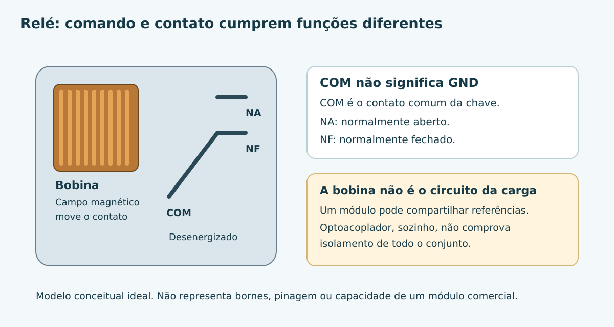
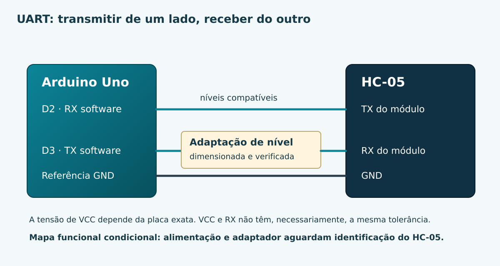
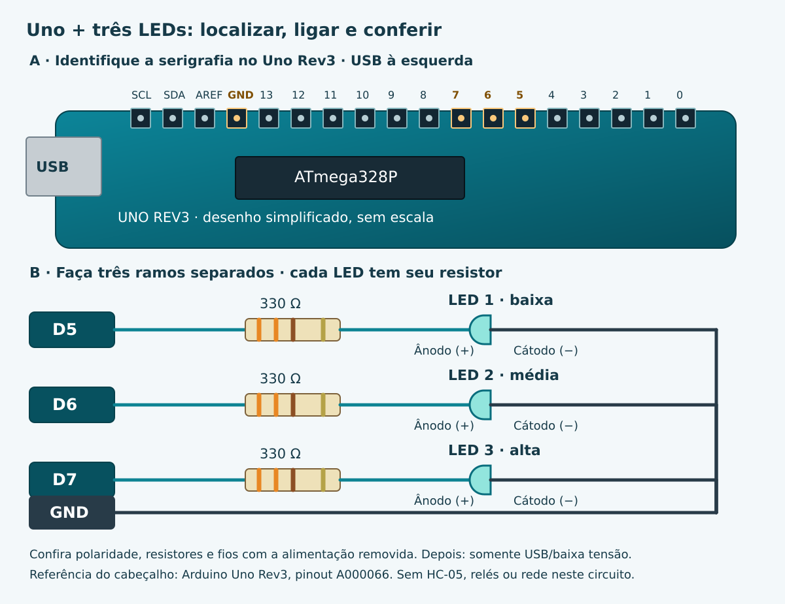
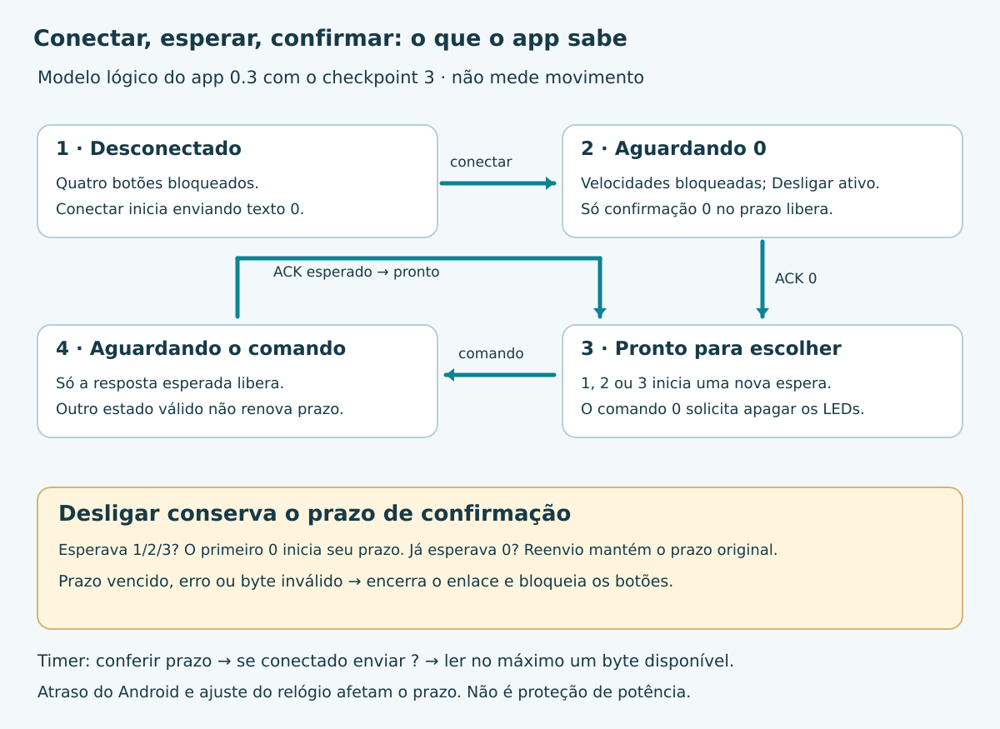

Controle de Ventilador por Bluetooth
Do primeiro comando à análise de um equipamento real. Aprenda com o Uno, represente as velocidades com LEDs e construa seu aplicativo no MIT App Inventor.
Conhecer o desafio
Está calor e o seletor do ventilador fica longe. O problema parece ser apenas criar quatro botões no celular. Mas entre o toque e o motor existem comunicação, interpretação, acionamento e proteção. Vamos separar essas responsabilidades e produzir uma evidência simples em cada passo.
Resultado desta versão: controlar três LEDs que representam as velocidades, construir o app Android e estudar a integração. O ventilador real de 220 V permanece como objetivo final condicionado ao projeto elétrico específico.
| Parte | Função | O que comprova |
|---|---|---|
| Aplicativo | Enviar um dos textos 0, 1, 2 ou 3 | Uma intenção do usuário. |
| HC-05 | Transportar mensagens por Bluetooth Classic/SPP | Comunicação, depois de testada. |
| Arduino Uno | Interpretar e selecionar uma saída lógica | Estado do programa. |
| LEDs de bancada | Representar baixa, média, alta e parada | A saída visual observada. |
| Relés e potência | Manobrar o equipamento real em projeto posterior | Exigem análise independente e ensaios. |
Separe a bancada
Use Uno R3, cabo USB, três LEDs e três resistores de 330 Ω, protoboard e jumpers apenas na baixa tensão. Para a etapa sem fio, será necessário um HC-05 identificado, alimentação adequada à sua variante e adaptação de níveis validada. O módulo de relés e o ventilador não entram na montagem de LEDs.
Retome os fundamentos se ainda não consegue identificar o GND, a polaridade do LED ou o motivo do resistor. Nesta etapa, faça um desenho indicando quem envia a ordem e quem executa.
Checkpoint de aprendizagem
Onde se decide a velocidade: no HC-05 ou no Arduino?
Conferir o raciocínio
O aplicativo envia a intenção. O HC-05 transporta a mensagem. O Arduino interpreta e seleciona o estado lógico. Um componente não substitui a função do outro.
Eletricidade e segurança
O primeiro limite aparece antes da programação: um circuito com LEDs não é uma instalação de potência. Precisamos compreender por que valores elétricos, separação e comportamento nas falhas importam.
Estude o tópico oficial: Eletricidade e segurança no controle de equipamentos. Ele reúne os novos fundamentos, as proteções e os limites de responsabilidade, sem repetir toda a base de Lei de Ohm já apresentada no curso.

Checkpoint de aprendizagem
Se o Arduino estiver desligado, podemos presumir que o motor está isolado da rede?
Conferir o raciocínio
Não. A condição do controlador não comprova abertura dos contatos ou isolamento da alimentação. A desconexão e os procedimentos são independentes.
Do comando ao contato do relé
O pino do Uno não pode assumir a função do seletor de potência. Antes de acrescentar qualquer módulo, precisamos entender como uma bobina comanda contatos e quais falhas esse mecanismo pode apresentar.
Abra Relés: bobina, COM, NA, NF e limites da montagem. Experimente o modelo de contato e volte a esta etapa.
Prática desta edição
Use a simulação ideal para prever COM–NF e COM–NA. Registre o módulo disponível, sua documentação e os dados exigidos pela aula. A montagem e o código físico do relé aguardam essa identificação. Enquanto isso, avance com os três LEDs, sem adaptar o programa para potência.

Checkpoint de aprendizagem
Por que apagar a saída do Arduino não garante que um contato abra?
Conferir o raciocínio
Porque o acionamento elétrico e o contato são partes diferentes. Um contato pode estar colado. O circuito real precisa tratar as falhas relevantes de forma independente.
Bluetooth com HC-05
Depois de entender a saída, precisamos transportar a intenção do celular até o Uno. O curso já utiliza Bluetooth no ESP32; aqui o HC-05 supre uma interface que o Uno não possui.
Estude HC-05: serial, pareamento, níveis e identificação da variante. Sem documentação da variante, faça a leitura e a simulação; mantenha a montagem física sem o módulo.

| Mensagem de texto | Estado solicitado |
|---|---|
| 0 | Todos os indicadores apagados. |
| 1 | Somente LED de baixa aceso. |
| 2 | Somente LED de média aceso. |
| 3 | Somente LED de alta aceso. |
Erro comum: texto e número binário
O texto “1” é transmitido como o byte ASCII 49. Enviar o valor binário 1 não produz o mesmo dado. Nosso programa compara os caracteres '0' a '3'.
Checkpoint de aprendizagem
O que precisa ser revisto ao trocar apenas a placa adaptadora do HC-05?
Conferir o raciocínio
Alimentação, níveis das entradas e saídas, pinagem, modo de dados, baud rate e significado dos indicadores. O nome HC-05 não resolve essas diferenças.
Programar três estados e desligar
Antes de depender da comunicação sem fio, vamos provar que o Uno interpreta os quatro caracteres. A montagem abaixo contém somente LEDs. Cada resistor pertence ao seu LED; não use um único resistor compartilhado.

| Saída do Uno | Caminho completo |
|---|---|
| D5 | Resistor 330 Ω → ânodo LED 1 → cátodo → GND. |
| D6 | Resistor 330 Ω → ânodo LED 2 → cátodo → GND. |
| D7 | Resistor 330 Ω → ânodo LED 3 → cátodo → GND. |
Checkpoint 1 — interpretar pelo USB
- Com a placa desligada, monte os três caminhos e confira curto e polaridade.
- Na IDE, selecione a placa Uno e a porta correta. Grave o arquivo completo abaixo.
- Abra o Monitor Serial em 9600, sem fim de linha. Envie 1, depois 2, depois 3 e, por fim, 0.
- Confira o LED correspondente e o caractere de retorno. Teste também uma letra inválida: o programa deve apagar os LEDs e responder 0.
// Mundo bit Byte — checkpoint 1: somente LEDs; nenhum motor ou rele.
// Uno: D5, D6 e D7 -> cada um a seu resistor de 330 ohms -> anodo LED.
// Os tres catodos vao ao GND. Monitor Serial: 9600, sem fim de linha.
const byte LEDS[] = {5, 6, 7};
byte velocidade = 0;
void selecionar(byte nova) {
// Primeiro apaga todos; depois acende, no maximo, um indicador.
for (byte i = 0; i < 3; i++) digitalWrite(LEDS[i], LOW);
velocidade = nova <= 3 ? nova : 0;
if (velocidade > 0) digitalWrite(LEDS[velocidade - 1], HIGH);
}
void setup() {
for (byte i = 0; i < 3; i++) {
digitalWrite(LEDS[i], LOW);
pinMode(LEDS[i], OUTPUT);
}
Serial.begin(9600);
selecionar(0);
}
void loop() {
if (!Serial.available()) return;
char comando = Serial.read();
if (comando == '\r' || comando == '\n') return;
selecionar(comando >= '0' && comando <= '3' ? comando - '0' : 0);
Serial.write('0' + velocidade); // Confirmacao logica de um caractere.
}
selecionar() apaga primeiro os três LEDs e só então acende o escolhido. O índice velocidade - 1 converte os estados 1, 2 e 3 para as posições 0, 1 e 2 do vetor. O estado zero não acende nenhum LED.
Checkpoint 2 — mudar o transporte
Apenas depois de validar a interface do HC-05, mantenha os LEDs e use o próximo programa. A interpretação não mudou; a leitura e a confirmação passaram de Serial para bluetooth. Ele ainda não supervisiona a ausência de mensagens. Use somente na bancada.
// Mundo bit Byte — checkpoint 2: HC-05 com LEDs, sem motor ou rele.
// Identifique e valide alimentacao, niveis e baud rate do HC-05 antes da ligacao.
// Uno D2 (RX software) recebe TX do modulo com niveis compativeis.
// Uno D3 (TX software) envia ao RX do modulo por adaptacao de nivel validada.
// A alimentacao do modulo e o adaptador nao sao definidos por este codigo.
#include <SoftwareSerial.h>
SoftwareSerial bluetooth(2, 3); // RX, TX do Arduino.
const byte LEDS[] = {5, 6, 7};
byte velocidade = 0;
void selecionar(byte nova) {
for (byte i = 0; i < 3; i++) digitalWrite(LEDS[i], LOW);
velocidade = nova <= 3 ? nova : 0;
if (velocidade > 0) digitalWrite(LEDS[velocidade - 1], HIGH);
}
void setup() {
for (byte i = 0; i < 3; i++) {
digitalWrite(LEDS[i], LOW);
pinMode(LEDS[i], OUTPUT);
}
bluetooth.begin(9600); // Confirmar esta velocidade na variante real.
selecionar(0);
}
void loop() {
if (!bluetooth.available()) return;
char comando = bluetooth.read();
if (comando == '\r' || comando == '\n') return;
selecionar(comando >= '0' && comando <= '3' ? comando - '0' : 0);
bluetooth.write('0' + velocidade);
}
Checkpoint 3 — observar a falta de comunicação
No programa anterior, o último estado permanecia mesmo sem novas mensagens. Agora o aplicativo envia “?” a cada 500 ms. Se passarem 2000 ms sem mensagem válida para a supervisão, o programa apaga os LEDs. Esses tempos foram escolhidos para uma demonstração perceptível; não dimensionam segurança de motor. “?” não liga a bancada, e uma supervisão atrasada não restaura a velocidade.
// Mundo bit Byte — checkpoint 3: prototipo didatico SOMENTE COM LEDs.
// Nao conectar estas saidas a reles ou a qualquer circuito de 220 V.
// Uno: LEDs/resistores em D5,D6,D7; Bluetooth software em D2(RX),D3(TX).
// Alimentacao/niveis do HC-05: verificar a variante e a interface antes de montar.
// Protocolo: textos '0'..'3'; '?' a cada 500 ms mantem o enlace supervisionado.
// Retorno: um caractere '0'..'3' confirma somente o estado logico dos LEDs.
#include <SoftwareSerial.h>
SoftwareSerial bluetooth(2, 3);
const byte LEDS[] = {5, 6, 7};
const uint32_t PRAZO_MS = 2000UL; // Escolha didatica, nao parametro de seguranca de motor.
byte velocidade = 0;
uint32_t ultimaMensagem = 0;
void selecionar(byte nova) {
for (byte i = 0; i < 3; i++) digitalWrite(LEDS[i], LOW);
velocidade = nova <= 3 ? nova : 0;
if (velocidade > 0) digitalWrite(LEDS[velocidade - 1], HIGH);
}
void confirmar() {
bluetooth.write('0' + velocidade);
}
void verificarPrazo(uint32_t agora) {
// Subtracao sem sinal tambem funciona quando millis() volta a zero.
if (velocidade > 0 && (uint32_t)(agora - ultimaMensagem) >= PRAZO_MS) {
selecionar(0);
confirmar();
}
}
void receber(char comando, uint32_t agora) {
if (comando == '\r' || comando == '\n') return;
// Uma mensagem de supervisao atrasada nao deve esconder um prazo ja expirado.
verificarPrazo(agora);
ultimaMensagem = agora;
if (comando == '?') return; // Mantem comunicacao; nunca liga os LEDs.
selecionar(comando >= '0' && comando <= '3' ? comando - '0' : 0);
confirmar();
}
void setup() {
for (byte i = 0; i < 3; i++) {
digitalWrite(LEDS[i], LOW);
pinMode(LEDS[i], OUTPUT);
}
selecionar(0);
bluetooth.begin(9600); // Requer HC-05 configurado para 9600 em modo de dados.
ultimaMensagem = millis();
}
void loop() {
verificarPrazo(millis());
// Processa um caractere por volta; nao bloqueia esperando texto ou delimitador.
if (bluetooth.available()) receber(bluetooth.read(), millis());
}
A subtração sem sinal permite verificar o intervalo mesmo na volta do contador millis(). Não usamos delay() nem esperamos uma linha completa para receber comandos. Os programas não são firmware de potência: não incluem detecção física de contato colado nem intertravamento elétrico.
Experimente antes da bancada
Simulação local de mensagens e LEDs. Não usa Bluetooth real nem controla equipamento.
Teste de transições
Teste todas as 12 trocas entre estados diferentes de 0 a 3, além das quatro repetições do mesmo comando. No checkpoint 3, acione um estado, interrompa a supervisão e confira a parada lógica. Volte a enviar somente “?”: os LEDs precisam continuar apagados até um novo comando de velocidade.
Checkpoint de aprendizagem
Por que não basta testar somente 0→1→2→3?
Conferir o raciocínio
Porque transições no sentido contrário também podem revelar problemas de ordem. Teste cada par de estados. Na potência, isso ainda não comprovaria o comportamento dos contatos.
Construir o aplicativo Android
O transporte e o programa estão separados. Falta construir uma interface que envie o dado certo, indique o enlace e apresente a confirmação com honestidade.
Baixar Ventilador MbB para Android (.apk) · Conferir versão e integridade
APK com integridade e assinaturas verificadas; testes no aparelho e na bancada ainda pendentes.
Siga a aula oficial Aplicativo de bancada Bluetooth no MIT App Inventor. Ela contém nomes de componentes, configurações do Designer, eventos, permissões e o projeto editável.
checkpoint 3 — bancada supervisionada. O checkpoint 2 não reconhece “?” e apaga os LEDs; preserve-o para o exercício anterior sem heartbeat.Ventilador MbB
Prévia visual · bancada de LEDs
Desconectado. Sem confirmação física.
Protótipo somente com LEDs.
Esta é uma prévia estática da organização da tela, não uma execução Android. Os nomes e textos seguem a configuração do projeto .aia.

Checkpoint de aprendizagem
O app perdeu a conexão. Por que o próprio Arduino também precisa tratar a ausência de mensagens?
Conferir o raciocínio
Porque um aviso na tela não altera, por si só, uma saída física. Na bancada, a supervisão do checkpoint 3 fornece um comportamento local demonstrável; a potência exige outras proteções.
A fronteira com o ventilador real
Os LEDs permitiram testar intenção, comunicação e seleção. O novo limite é que o motor tem características elétricas, mecânicas e de falha que o LED não representa. Não substitua os LEDs por entradas de relés para “terminar” a montagem.
Dossiê necessário para prosseguir
| Evidência | Quem precisa validar |
|---|---|
| Identificação e estado do ventilador, manual e placa | Responsável técnico e proprietário do equipamento. |
| Esquema real de velocidades, motor, capacitor e proteção térmica | Profissional competente para a intervenção. |
| Dispositivos de manobra adequados ao motor e à partida | Responsável pelo dimensionamento. |
| Intertravamento independente, contato colado e falhas de alimentação | Responsável pelo projeto e ensaios. |
| Isolamento, invólucro, fiação, fixação e desconexão | Responsável pela instalação e inspeção. |
| Procedimentos e resultados de ensaios aplicáveis | Responsável pela liberação da etapa. |
O aplicativo permanece simples. As decisões profissionais devem ficar em uma documentação separada por modelo de ventilador. Trocar o equipamento pode exigir refazer essa documentação e o circuito de potência, mesmo mantendo o aplicativo.
Checkpoint de aprendizagem
Se a simulação e os LEDs passaram em todos os testes, o que ainda falta para o ventilador?
Conferir o raciocínio
Identificar o equipamento, projetar potência e proteções, validar falhas e executar inspeções e ensaios reais. A aprovação digital do conteúdo não substitui essas tarefas.
Testar, explicar e concluir
Concluir significa conseguir explicar o sistema e mostrar evidências. Separe o que foi analisado em código, observado no simulador, executado na bancada e inspecionado profissionalmente.
| Teste | Resultado esperado | Ambiente |
|---|---|---|
| 0 e estados 1–3 | Nenhum LED ou somente o LED escolhido. | Simulador e bancada. |
| 12 trocas e repetição de comandos | Seleção coerente, sem dois LEDs acesos. | Programa e bancada. |
| Caractere inválido | Estado lógico 0. | Programa e bancada. |
| Reset e retorno da alimentação | Inicia com os LEDs apagados. | Placa física. |
| Ausência de supervisão no checkpoint 3 | Apaga; “?” sozinho não religa. | Simulador e HC-05. |
| Permissão negada, falha e reconexão | Informa a falha; reconecta enviando 0. | Android real. |
| Motor e proteções | Critérios e ensaios definidos no projeto específico. | Somente etapa profissional. |
Uma última decisão
O Arduino respondeu “3”. Qual afirmação é sustentada?
Entrega
Apresente os arquivos usados, o registro dos testes e sua explicação sobre as falhas. Identifique no relatório o que ainda depende de componente, teste ou profissional. As marcações desta página são pessoais e não alteram o progresso global do Meu MbB.
Baixar orientações e limites dos checkpoints · Projeto App Inventor experimental
Checkpoint de aprendizagem
O que você consegue demonstrar agora que não conseguia no começo?
Conferir o raciocínio
Uma seleção de estados comandada por mensagens, a diferença entre os papéis dos componentes, uma política de supervisão de bancada e os limites que impedem extrapolar o protótipo para a rede elétrica.